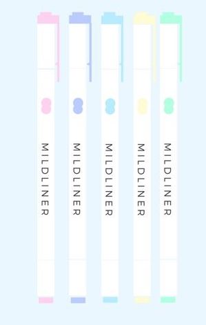
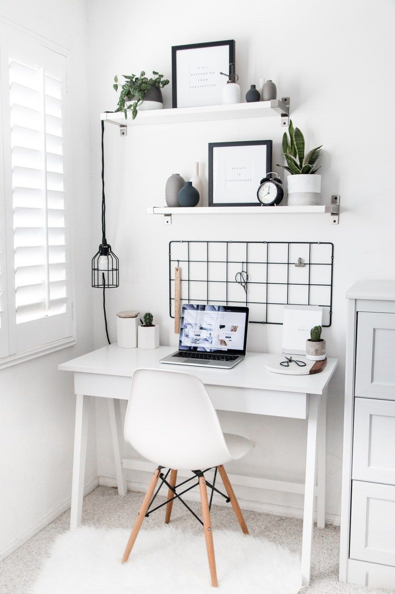
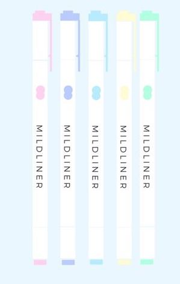
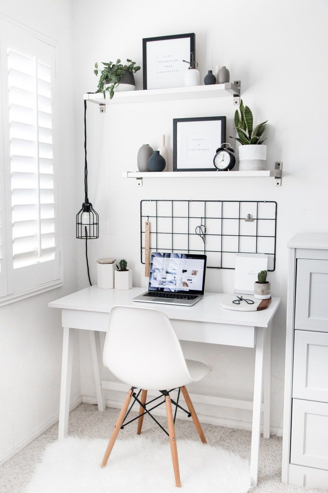

GET INFORMED
HOW TO STAY PRODUCTIVE

 



study tips
Tip #1
GET SEPARATE NOTEBOOKS FOR EACH SUBJECT
Multiple notebooks might seem inconvenient because of the all the weight but, maintaining an untangled life requires focus. The style of the notebook also matters. I suggest a notebook that has the most simplistic design, then you will have more freedom with decorating. Decorating improves my mood and motivates me to be focused. Dotted instead of lined notebooks are excellent for people who are trying to improve their handwriting. Pick what is best for you! For instance, spiral notebooks that have the rings at the top, will be more comfortable for lefties out there! Organizing topics and subjects will improve your focus while studying or reviewing. This will also be in handy when you buy stickers, dividers and pens that coordinate with each subject. Which leads us to our next tip, writing utensils!
Tip #2
WRITING UTENCILS
JESSIE'S WRITING UTENSILS
This is the Pilot Dr. grip purewhite pencil .5mm.
This pencil has to be my absolute favorite pencil. The lead is .5mm and extremely smooth and stable.
It has a very sleek pearly white body, and its double layered grip is extremely soft to write with,
yet still gives a firm hold on the pencil. The price on this pencil is rather expensive, however.
I have been using it for almost 6 years now and still going strong so think it is definitely worth the investment.
I have received numerous comments about how pretty aesthetics of the pencil are.
This is the Uni-ball signo .38mm capped black.
I own a lot of thin pens, but Uni-ball’s signo .38mm black capped pen has got to be on of my favorite pens.
It has a really smooth tip for such a thin pen. I got them in Japan, and in the U.S. it is definitely harder to find in a store, so if you are looking for something more accessible, Muji capped .38 pens are almost identical, except these lack a grip and for sweaty hand, it might not be the best choice of pen.
For both of these options, they are considerably more expensive than a typical black pen, but for the quality of the pen, it is worth buying.
For the muji pens, if you use the pen often, it is smarter to buy them in their bulk sets, since they are cheaper.
And for Uni-ball signos, you can order them in a bundle off amazon for a cheaper price than individually.
From Preeti
WHAT IS IN MY PENCIL CASE?
We Definitely Recommend these Pens: Black Pentel EnerGel, Needle-tip, 0.5mm Muji Gel-Ink Black Pen, 0.38mm Muji Gel-Ink Dark Blue Pen, 0.5mm Blue Pilot Juice Pen, 0.5mm Paper-Mate InkJoy Red Pen, 0.7mm Purple Pentel EnerGel, Needle-tip, 0.5mm Pink Pentel Energel, Needle-tip, 0.5mm Green Pentel Energel, Needle-tip, 0.5mm
So these pens have lasted for 2 years now! The EnerGel ones don’t smudge when you use a highlighter, and none of the pens bleed.
Pencils and Erasers: Mono Graph Pencil, 0.5mm Mono Mini-Eraser Dixon Ticonderoga, #2, HB
The Mono Graph pencil is good, but it doesn't have much of a grip, so if your hands get slippery when you write, that one isn't that great for you.
Highlighters: Zebra Mildliners Colors: Purple, Green, Orange, Yellow, Light Pink, Light Grey, Light Blue, Dark Blue
I don't really use colored pens anymore. I just write all my notes with a black pen and then I use different colored highlighters. It's a really good system which makes my notes easy to read, and organized.
Additional Stuff: Muji White-Out Tape Mini Staedtler Ruler
Tip #3
DESIGNATED STUDY AREA
Clutter happens. Our desks get messy, especially when you’re cramming and all our papers, books, pens, and more are scattered all over. But a clean workspace helps more than you can imagine. When you start, make sure everything on your desk relates to the work you're doing. Put away unwanted materials so you can concentrate on the task at hand.